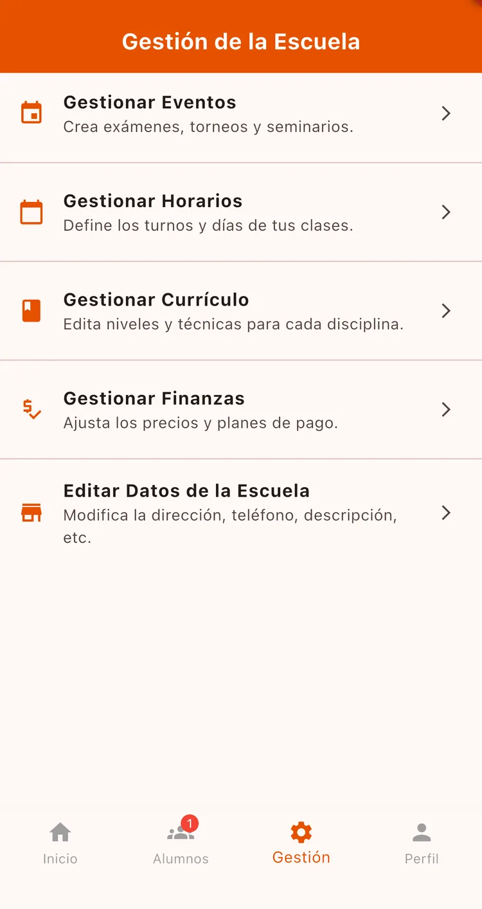
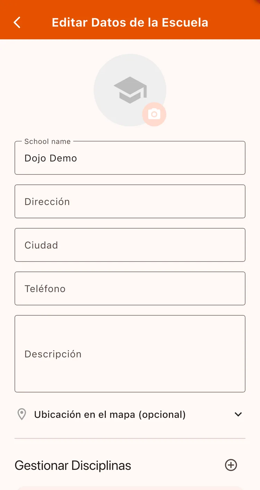
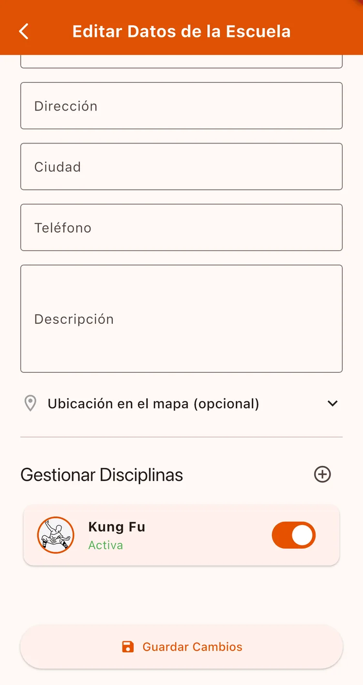

¿Para qué sirve?
Es la cara de tu escuela dentro de la app. El logo y los datos son lo que ven tus alumnos, y la ubicación en el mapa es lo que permite que alumnos nuevos te encuentren cuando buscan escuelas cerca.
Antes de empezar
- Tener la escuela ya creada.
Paso a paso
Entrá a los datos de la escuela
Andá a la pestaña Gestión y tocá Editar Datos de la Escuela.

Subí el logo
Tocá el ícono de cámara sobre el círculo y elegí una imagen de tu galería. La app la comprime sola, así que no te preocupes por el peso del archivo.

Completá los datos de contacto
Nombre de la escuela, Dirección, Ciudad, Teléfono y una Descripción donde podés contar tu estilo, historia o a quién está dirigida.

Marcá tu ubicación en el mapa
Tocá el selector de ubicación y marcá dónde queda tu dojo. Es lo que hace que aparezcas cuando un alumno busca escuelas en su zona.

Gestioná tus disciplinas
Abajo tenés Gestionar Disciplinas: podés agregar artes marciales nuevas con el botón +, o marcar como inactiva alguna que ya no enseñes.
Cuando termines, tocá Guardar Cambios.

Cada arte marcial tiene su color, y la app toma el de tu disciplina principal para el tema visual. No hay un selector de color libre: si querés otro aspecto, cambiá el orden de tus disciplinas.